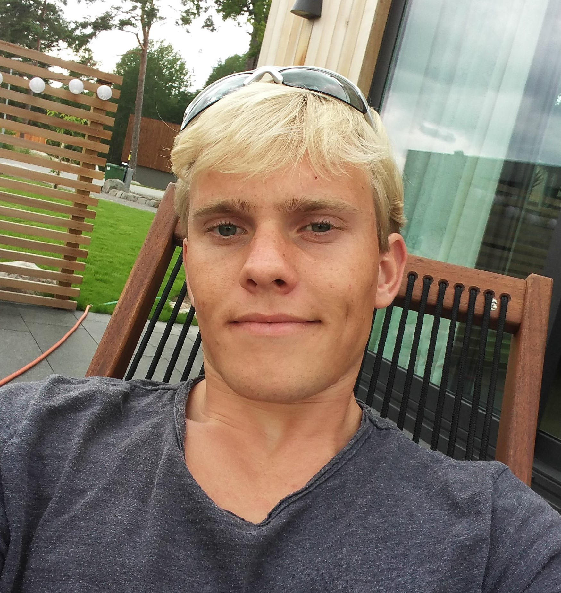

Hello! My name is Fredrik. For the past 4 years i have been studying at Chalmers in Gothenburg.
The year before us had recently moved the webhosting infrastructure to a Plesk 17. We took on the task of upgrading and aiding in upgrading 50+ deprecated php sites starting at sites as old as php 5.3 (year 2014). This project was a double edged sword in the aspects that it allowed us to secure the chalmers student union's committee's websites against attacks and it increased our security reputation with our ISP - Chalmers IT.
transitioning an on-prem datacenter to a hybrid setup with the possibility of moving resources offsite.
...-
Rännvägen 7, 41258, Göteborg, Sweden, +46 72 314 41 53 fredrik@dyrvold.dev
Swedish